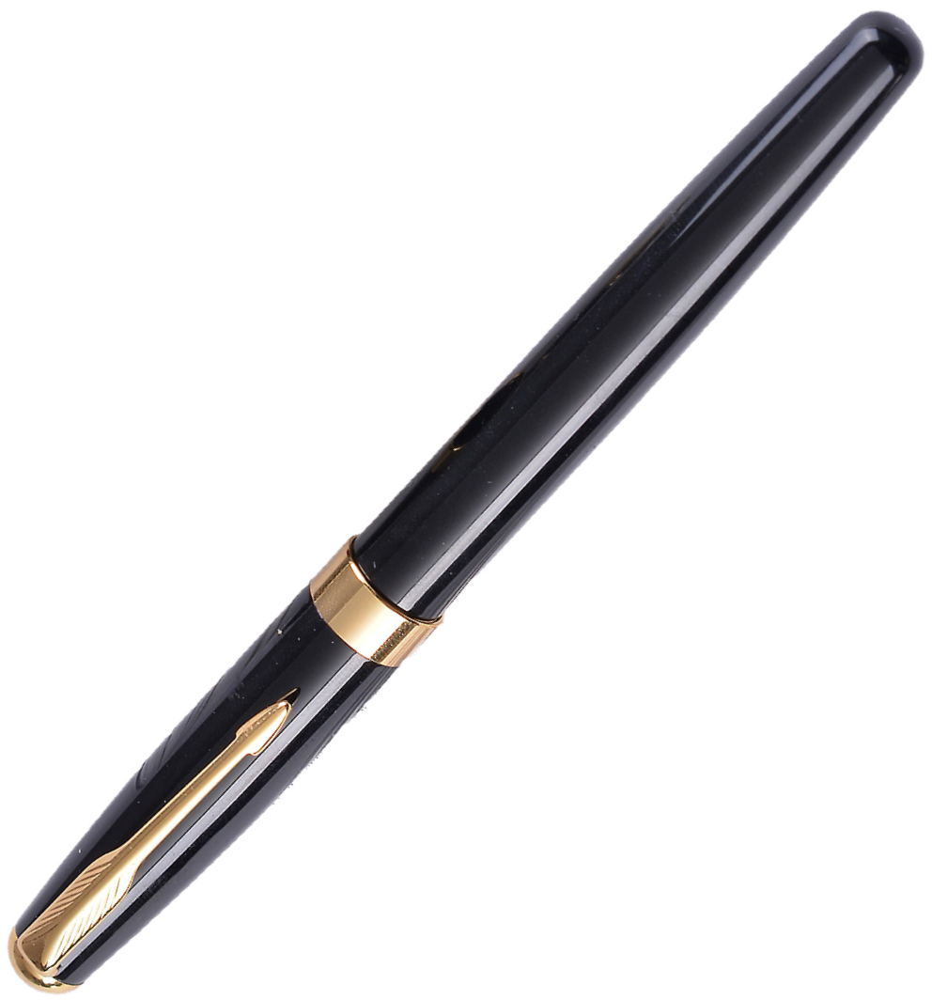
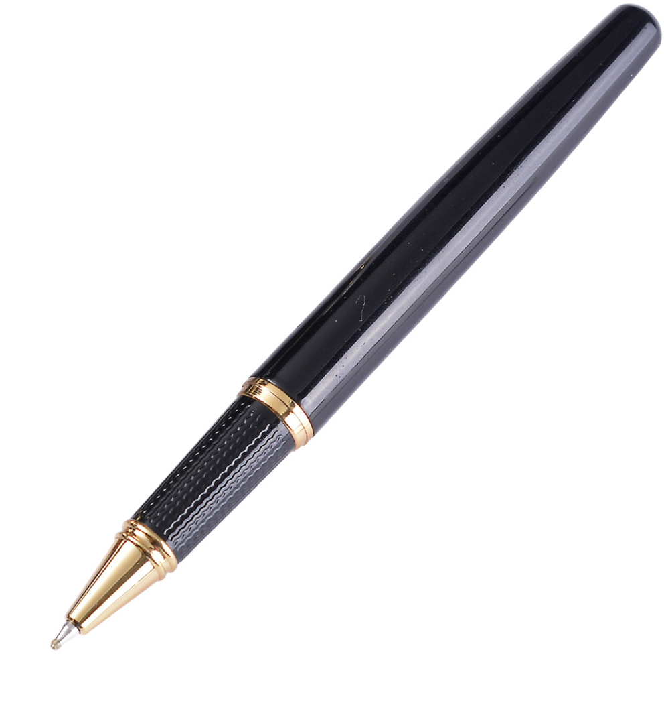
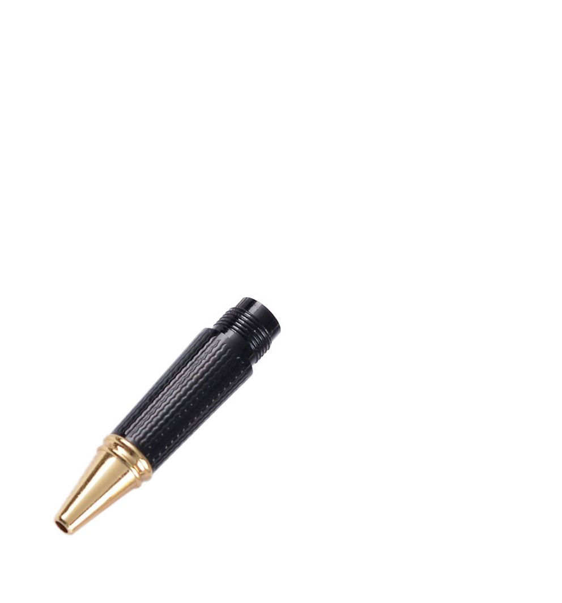
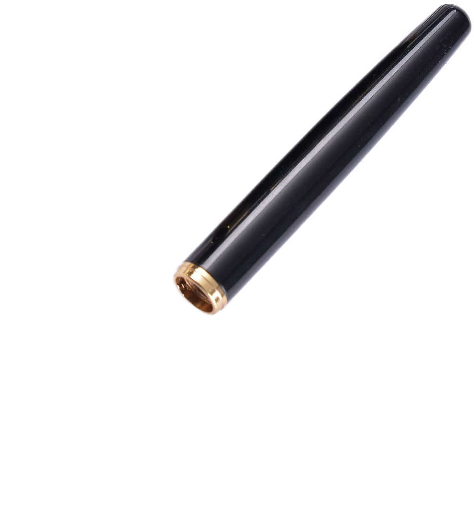
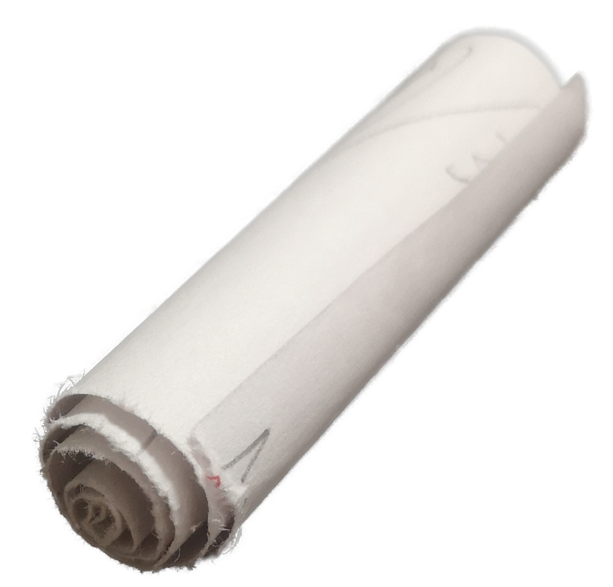

MMPI Test
MMPI Test
请用 "是□" "否□" 回答以下问题:





输入并检查答案
Answer
下一个迷题藏在假山的监控旁, 杆子所在的地下
你知道吗, 这一题有两个网页. 你目前所在的网页不是真正的网页, 因此也无法链接到下一题.
而且你要知道, 上面的输入检查框是骗人的, 它没有正确答案, 只会显示 '匹配度 0.0%'. 所以理论上你看不到这段话, 除非你打开了控制台.
顺带一提, 下面的按钮也是骗人的, 它们不会带你去下一题, 只会回到此页.
既然你找不到思路, 想要跳过这一题了, 我就大发慈悲告诉你方法吧: 点开答题纸, 打开笔帽, 反复点击笔身以旋开, 然后取出里面的纸条...